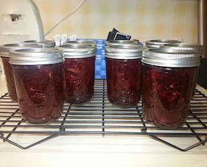

Strawberry Jam

Description
Jar up the freshness of summer with Classic Strawberry Jam. This timeless treat is delicious as a spread on a freshly baked biscuit, paired with peanut butter, or spooned into some yogurt! You can even spread some of your jam into a grilled cheese for a sweet surprise for the kids!
Makes about 8 (8oz) half pints.
Ingredients
- 5 cups crushed strawberries (about 5 lbs.)
- 1/4 cup lemon juice
- 6 Tbsp. Ball® RealFruit™ Classic Pectin
- 7 cups granulated sugar
Steps
- Prepare boiling water canner. Heat jars in simmering water until ready for use. Do not boil. Wash lids in warm soapy water and set bands aside.
- Combine strawberries and lemon juice in a 6- or 8-quart saucepan. Gradually stir in pectin. Bring mixture to a full rolling boil that cannot be stirred down, over high heat, stirring constantly.
- Add entire measure of sugar, stirring to dissolve. Return mixture to a full rolling boil. Boil hard 1 minute, stirring constantly. Remove from heat. Skim foam if necessary.
- Ladle hot jam into a hot jar leaving a ¼ inch headspace. Remove air bubbles. Wipe jar rim. Center lid on jar and apply band, adjust to fingertip tight. Place jar in boiling water canner. Repeat until all jars are filled.
- Process jars 10 minutes, adjusting for altitude. Turn off heat, remove lid, let jars stand 5 minutes. Remove jars and cool 12-24 hours. Check lids for seal, they should not flex when center is pressed.